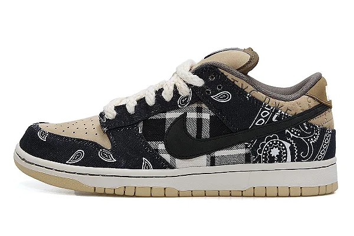
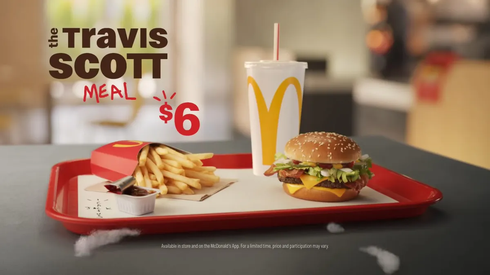
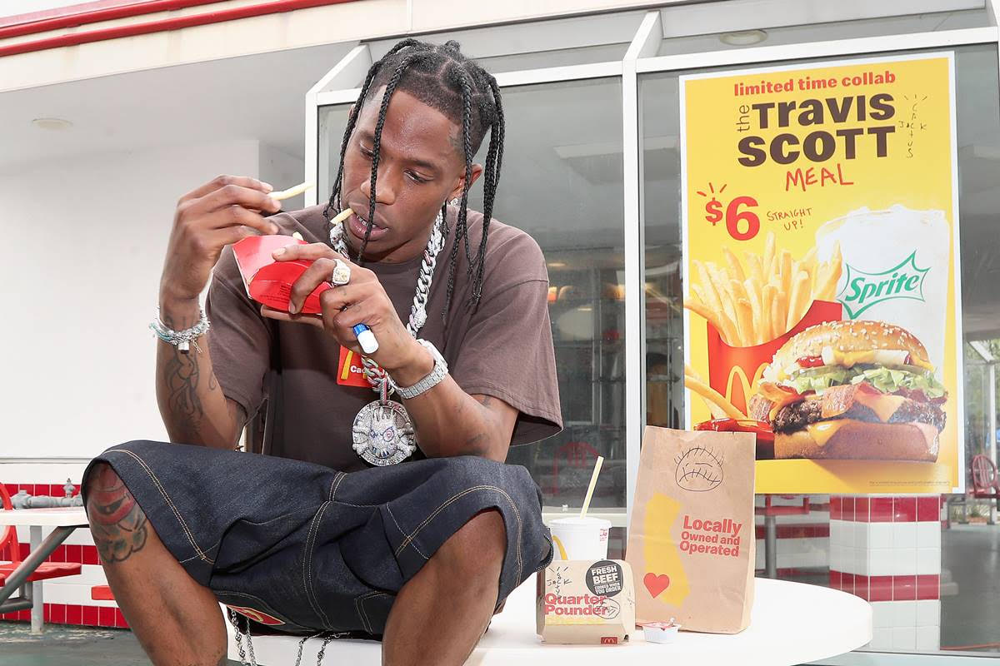
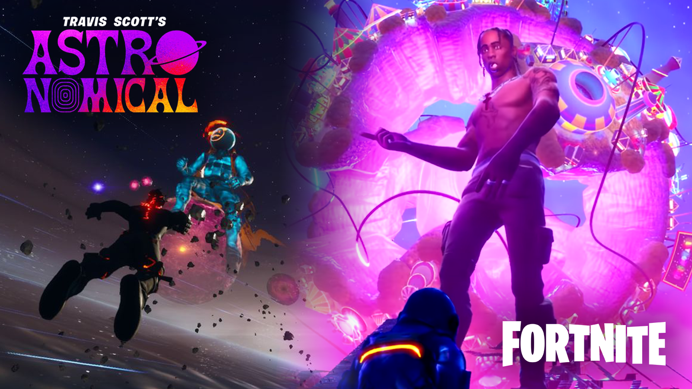

Parcerias
Travis Scott já fez diversas parcerias ao longo de sua carreira, não só na música, mas também em outros
campos como moda e entretenimento. Aqui estão algumas das parcerias notáveis que ele fez até onde minha
última atualização vai: Nike: Travis Scott tem uma parceria com a Nike através da linha "Travis Scott x
Nike", que inclui várias versões exclusivas de tênis, como o Air Jordan 1 Retro High Travis Scott, Air
Jordan 4 Retro Travis Scott, entre outros. Essas colaborações são extremamente populares entre
colecionadores e fãs de sneakers, muitas vezes esgotando em minutos após o lançamento.
Colaboração com a Nike


McDonald's
Em 2020, Travis Scott colaborou com o McDonald's para lançar o "Travis Scott Meal", que consistia em um
Quarter Pounder com queijo, batatas fritas com molho barbecue, e um Sprite.
Colaboração com o McDonald's


Fortnite
A colaboração entre Travis Scott e Fortnite foi um evento virtual épico que combinou música ao vivo,
entretenimento e jogabilidade interativa.
Realizado em abril de 2020, o evento apresentou um concerto virtual de Travis Scott dentro do mundo do jogo
Fortnite, chamado de "Astronomical".
Durante o concerto, os jogadores puderam assistir a performances ao vivo de Travis Scott como seu avatar
digital, enquanto exploravam um ambiente
visualmente impressionante e interativo, repleto de efeitos especiais e elementos surpreendentes.
Colaboração com o Fortnite
